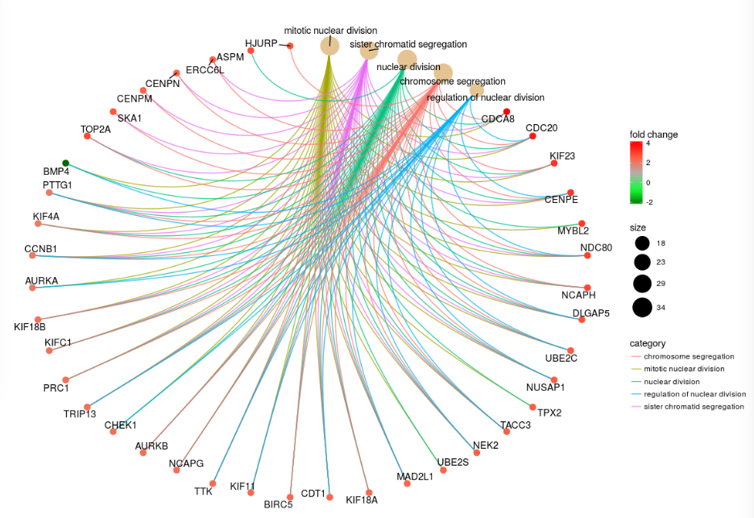
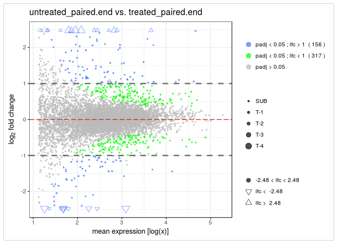

Bioconductor 3.7 wrap-up
bioconductor
R
scrna-seq
A wrap-up of the Bioconductor 3.7 release
The Bioconductor 3.7 release was announced this week. I thought I would have a look through the new packages and changes to existing packages and point out some of my highlights. The descriptions below are my summaries, if you want to see more detail you can read the full release notes here.
Single-cell RNA-seq
My interest is in single-cell RNA-seq analysis, so I am going to start off with packages related to this.
New packages
- BEARscc - noise estimation tool to assess scRNA-seq clusters
- ccfindR - collection of tools for cancer scRNA-seq analysis, including meta-gene identification and trees of cell clusters
- DESingle - detects three types of differential expression betweeen two groups of cells, differential expression status, differential expression abundance and general differential expression
- DropletUtils - utility functions for handling data from droplet technologies like the 10x Chromium
- iSEE - Interactive SummarizedExperiment Explorer, Shiny-based GUI for exploring data in SummarizedExperiment objects, with special attention given to SingleCellExperiment

- LineagePulse - differential expression and expression model fitting package for scRNA-seq, accounting for batch effects, dropout and sequencing depth
- MetaNeighbour - quantify cell type replicability across datasets
- netSmooth - imputation of scRNA-seq data using biological networks
- scFeatureFilter - correlation based method for removing genes affected by systematic noise
- singleCellTK - Shiny-based interactive scRNA-seq analysis toolkit
- TENxBrainData - scRNA-seq data from 1.3 million mouse brain cells
- simpleSingleCell - workflow implementing low-level scRNA-seq analysis using scran, scater and other Bioconductor packages
Updates
- AUCell - new Shiny app and plotting functions, support for sparse matrices
- clusterExperiment - support for hdf5 files and SingleCellExperiment objects
- monocle - changes to clustering algorithms
- scater - changes to
calculateQCMetrics()and plotting functions, some functionality moved to new packages - scDD - proportion of zeros test now use the Wald test instead of likelihood ratio, performance improvements
- scran - various bug fixes, improvments and new arguments
- SingleCellExperiment - new functions for clearing and setting information
- splatter - new options for Splat simulation library size and dropout parameters, new SparseDC simulation, improvfed print output
- zinbwave - now uses
countsassay by default, uses can specify which assay to use, computational weights now saved as an assay, improved documentation
Other areas
New packages
- enrichplot - ggplot2 based functions for visualising gene-set enrichment results

- GARS - feature selection for high-dimensional datasets using genetic algorithms
- plyranges - dplyr-like interface for Range and GenomicRanges objects
- PowerExplorer - simulation based power calculations
- singscore - rank-based single-sample gene set scoring method
- SummarizedBenchmark - BenchDesign and SummarizedBenchmark classes for building, executing and evaluating software benchmark experiments
- vidger - function for visualising differential expression results from Cuffdiff, DESeq2 and edgeR

- BiocMetaWorkflow - workflow describing how to use BiocWorkflowTools to submit a single R Markdown document to both Bioconductor and F1000Research
Updates
- DESeq2 - performance improvements and deprecation of designs without replicates
- edgeR - new
read10X(),nearestTSS(),nearestReftoX(),modelMatrixMeth()andfilterByExpr()functions - GenomicRanges - GenomicRanges is now a list subclass, performance improvements
- minfi - preliminary support for DelayedArray minfi objects
- SummarizedExperiment - new
subsetmethod - tximport - support for StringTie output